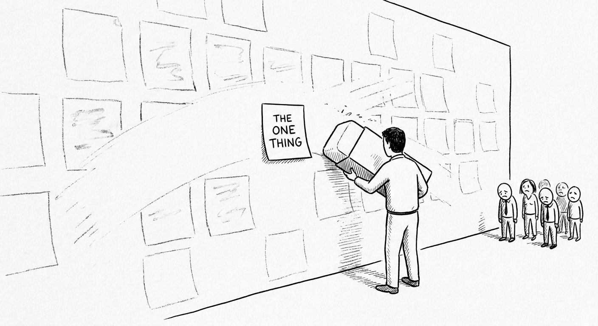
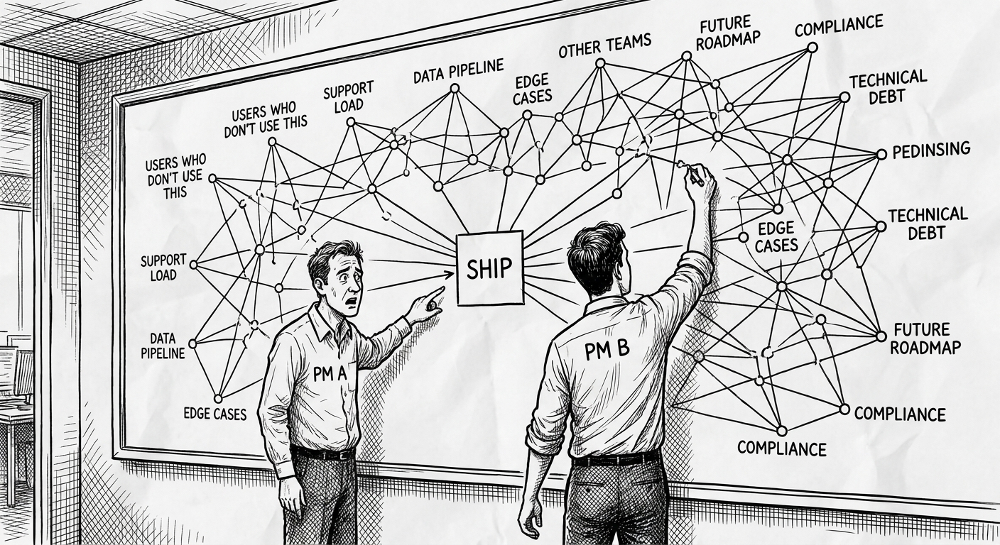
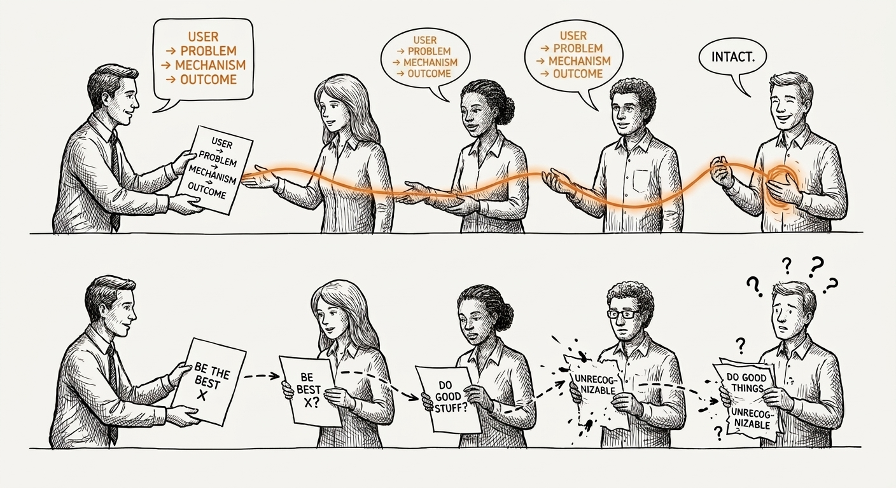
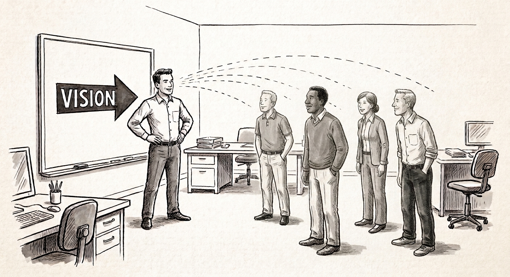
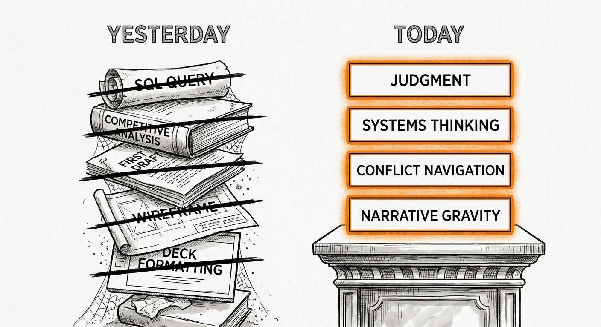

Capítulo 2. Las cualidades que la IA no reemplaza
Antes de entrar en cuáles son las cualidades, seamos precisos sobre qué cambió.
La IA escribe tu primer borrador, consulta tu base de datos, genera un backlog, resume cinco estudios de investigación que compiten entre sí y produce un prototipo usable en veinte minutos. Las capacidades que exigían meses del tiempo de un PM — escribir PRDs, correr extracciones de datos, sintetizar investigación de usuarios, armar decks de presentación — se volvieron muy, muy baratas. No es una exageración ligera. He visto a PMs en Meta y en otros lados comprimir en una tarde trabajo que antes tomaba una semana. La compresión es real.
Y esto es lo que esa compresión revela: las habilidades nunca fueron el núcleo del trabajo. Las habilidades siempre fueron el proxy visible y medible de algo más difícil de nombrar. Lo que realmente necesitabas — lo que distinguía a los PMs que tomaban decisiones de peso de los que producían muchos artefactos — era un conjunto de disposiciones. Maneras de relacionarte con la incertidumbre. Tolerancias al conflicto. La capacidad de sostener una posición bajo presión o de abandonarla ante la evidencia.
Esas disposiciones siempre fueron el verdadero trabajo. Solo que tenían cobertura. Cuando eras la única persona del equipo capaz de escribir un query de SQL coherente, tu juicio sobre cuál query correr venía empaquetado con una habilidad técnica, y el paquete se llevaba el crédito por cosas que la habilidad no merecía. Cuando eras el único capaz de producir un análisis competitivo, tu lectura de qué importaba en ese análisis quedaba invisible dentro del entregable. La IA desempaquetó esto. Ahora el entregable es barato. Lo que tú le aportas al entregable es lo valioso.
Este capítulo trata de las cualidades que siempre cargaron el peso, ahora que quitaron el andamiaje.
Voy a ser directo: algunas de estas cualidades se pueden aprender, pero solo hasta cierto punto. Otras las tienes o no las tienes — no porque la gente sea inamovible, sino porque exigen una orientación de base hacia ciertos tipos de incomodidad que no se puede fingir para siempre. He sido mentor de suficientes PMs como para saber que los que fracasan rara vez carecen de habilidades. Les falta una de estas cualidades. Y como las habilidades eran la capa visible, ni ellos ni sus managers lo notaron hasta que fue demasiado tarde.
Lee esto como un diagnóstico. No como una checklist por completar. Como un espejo honesto.
2.1 Juicio
Veinte opciones es lo fácil. El juicio elige una y mata diecinueve.
Esa frase suena simple. No lo es. Generar opciones se siente como progreso. Produce artefactos. Le da al equipo algo a lo que reaccionar. El juicio, en cambio, se siente como violencia. Estás eliminando cosas en las que la gente trabajó, caminos que le importaban a alguien, posibilidades que la organización no exploró del todo. No hay artefacto para «las diez cosas que decidí no construir». No hay deck que se llame «por qué estaba seguro». El producto del buen juicio suele ser una decisión que en retrospectiva parece obvia, lo que significa que quien la tomó no recibe crédito por lo difícil que fue tomarla.
Déjame contarte de una PM a la que vi fallar en usarlo.
Era una PM aguda, articulada y con soltura en datos, en una empresa Series B. El producto era una herramienta SaaS B2B para equipos de operaciones. Habían acumulado ocho meses de investigación de usuarios: entrevistas, grabaciones de sesión, tickets de soporte, encuestas de NPS. Los datos eran ricos. Ella los había sintetizado en un documento de diecisiete páginas con seis áreas de oportunidad. Cada una era real. Cada una tenía una cita de usuario que la anclaba. Cada una tenía un dimensionamiento aproximado. El documento era un trabajo excelente.
Luego lo llevó al equipo y preguntó: «¿Por dónde empezamos?».
Lo que pasó después era predecible. Ingeniería tenía opiniones moldeadas por la deuda técnica. Ventas tenía opiniones moldeadas por lo que hubieran mencionado los últimos tres prospectos enterprise. Diseño tenía opiniones moldeadas por lo que les parecía más interesante de trabajar. El CEO tenía opiniones moldeadas por un competidor que lo tenía ansioso. La conversación dio vueltas en círculos durante seis semanas. Al final arrancaron dos áreas de oportunidad en simultáneo, ninguna con los recursos suficientes para avanzar. Seis meses después habían lanzado fragmentos de ambas y no habían cerrado ninguna.
Los datos estaban bien. La síntesis estaba bien. Lo que faltaba era una decisión. Ella había producido un menú. El equipo necesitaba un chef.
El juicio no es lo mismo que saber más. Ella sabía más que cualquiera en esa sala. El juicio es la disposición a tomar una posición explícita — esta, no aquellas — y a responder por ella. Exige tolerar equivocarte de una manera que todos pueden ver, que es un tipo de exposición específico e incómodo. El PM que lo evita produce análisis hermosos que no mueven nada. El PM que lo tiene produce decisiones que pueden estar equivocadas, pero que al menos tienen la decencia de ser comprobables.

Ahora déjame contarte cómo se ve elegir bien.
En Social Bicycles — después JUMP, después adquirida por Uber — teníamos bicicletas inteligentes con GPS en varias ciudades. Cada ciudad venía con su propio paquete de restricciones de infraestructura, entornos regulatorios y comportamientos de usuario. Tomábamos decisiones de producto constantemente con datos incompletos sobre qué funcionaría dónde. Recuerdo un debate sobre si invertir tiempo de ingeniería en una funcionalidad sofisticada de precios dinámicos o en mejorar la confiabilidad básica del candado. La funcionalidad de precios dinámicos era más interesante. Había datos que sugerían que podía impulsar la utilización en ciertas condiciones de ciudad. Dos ingenieros estaban entusiasmados con ella.
El juicio en ese momento significó reconocer que el problema de confiabilidad del candado nos estaba comiendo en silencio. Los tickets de soporte por candados fallidos eran un porcentaje pequeño del total de viajes — pero eran los viajes que generaban quejas municipales, y las relaciones municipales eran existenciales. Una ciudad que recibía tres llamadas de usuarios furiosos que no podían terminar su viaje era una ciudad que empezaba a hacer preguntas duras sobre la renovación del contrato. Los precios dinámicos ayudarían a las métricas de utilización. La confiabilidad del candado era lo que estaba entre nosotros y perder el contrato.
Esa elección no estaba en los datos de ninguna manera obvia. Requería sintetizar información técnica, contexto político, señales de experiencia de usuario y una lectura de cuál era realmente nuestro riesgo de negocio. Requería matar algo que entusiasmaba al equipo. Requería poder decir, en una sala con gente que no estaba de acuerdo: esto es lo que vamos a hacer.
Eso es el juicio. Ya ves por qué es difícil de enseñar.
Qué cambió la IA sobre el juicio, en específico
La IA cambió los insumos del juicio, no el juicio en sí — pero el cambio en los insumos es lo bastante significativo como para merecer atención cuidadosa.
El problema es este: la IA valida cualquier juicio que le traigas. Puedes darle el prompt «estoy considerando priorizar la confiabilidad del candado sobre los precios dinámicos — ayúdame a construir el caso» y obtener un argumento riguroso y bien estructurado a favor de esa posición. Luego puedes darle «mejor ayúdame a construir el caso de los precios dinámicos» y obtener un argumento igual de riguroso en sentido contrario. El modelo no tiene una posición. Tiene tu posición, amplificada.
Este es el problema de la adulación. Antes de la IA, construir el caso analítico de una decisión requería trabajo — síntesis, entrevistas, extracción de datos — y ese trabajo te exponía a evidencia en contra por el camino. Entrevistabas a un cliente planeando armar el caso de la funcionalidad A y aprendías algo que te hacía reconsiderar. La fricción de la investigación era epistémicamente útil. Ahora puedes producir un caso pulido y con citas para casi cualquier decisión en treinta minutos, lo que significa que puedes saltarte la fricción. Puedes ir de la opinión a la opinión confirmada sin interrogatorio de por medio.
El riesgo no es que la IA reemplace el juicio del PM. El riesgo es que infle la confianza en el mal juicio haciéndolo ver bien fundamentado. El PM que tenía un juicio mediocre antes de la IA ahora tiene un juicio mediocre envuelto en un deck convincente. Eso es más difícil de detectar.
Lo que necesitas hacer distinto: trata los análisis de tus propias posiciones generados por IA con el mismo escepticismo que le aplicarías a un argumento de alguien con un interés obvio en el resultado. Te va a decir lo que quieres oír. Tu trabajo es pedirle que te diga por qué estás equivocado.
Cómo desarrollar el juicio
El juicio se desarrolla tomando decisiones explícitas y dándoles seguimiento — no de una manera que te proteja, sino de una que te haga responsable. Así se ve en la práctica:
Lleva una bitácora de decisiones. No una bitácora de las decisiones que tu equipo tomó colectivamente. Una bitácora de las posiciones que tú tomaste personalmente, cuándo las tomaste, cuáles eran las alternativas y qué evidencia esperabas que demostrara que tenías razón o no. Revísala cada trimestre. La meta no es lograr un buen promedio de bateo. La meta es entender tus patrones de decisión: dónde eres sistemáticamente sobreconfiado, dónde sistemáticamente demasiado cauto, qué tipos de información sobrepondera o descartas demasiado rápido.
Practica matar cosas en público. La incomodidad del juicio no está en el acto interno de decidir. Está en el acto externo de decirlo. La mayoría de los PMs que evitan el juicio no lo evitan porque no puedan decidir en privado. Lo evitan porque declarar una posición públicamente crea una exposición con la que no están cómodos. La práctica consiste en hacer visibles tus posiciones antes de que estén confirmadas, para construir tolerancia a equivocarte frente a la gente.
Estudia tus reversas. Encuentra decisiones tuyas que resultaron equivocadas. No equivocadas porque la evidencia no estaba disponible — equivocadas porque tenías la evidencia y la leíste mal, o porque ponderaste algo incorrectamente. Esas son las útiles. ¿Cuál fue el estado psicológico que produjo el error? ¿Estabas evitando el conflicto con un stakeholder en particular? ¿Estabas apegado a una narrativa que los datos deberían haber roto? Este tipo de retrospectiva es incómoda, y por eso la mayoría de los PMs se la salta. También es donde vive la mayor parte del aprendizaje.
Haz apuestas chicas antes que grandes. El juicio es una habilidad que se degrada con las apuestas altas. Busca contextos de decisión de menor riesgo para practicar — decisiones de alcance dentro de un sprint, llamadas de priorización en funcionalidades menores, decisiones de encuadre en un documento. Construye el músculo antes de que las consecuencias sean grandes.
Cómo ponerte a prueba en juicio
Aquí van momentos realistas de PM, no prompts de entrevista de caso. Lee cada uno. Antes de continuar, forma una posición de verdad.
Escenario 1: Tienes tres funcionalidades en desarrollo. Una está al 60% pero el ingeniero que la trabajaba acaba de transferirse a otro equipo. Otra está al 30% y su ingeniera está muy motivada. La tercera está al 90%, pero la investigación de usuarios que terminaste la semana pasada sugiere que el problema de fondo cambió. Ingeniería quiere terminar la del 90% porque ya casi está. ¿Qué haces?
La trampa aquí es el encuadre del costo hundido. «Ya casi está» no es una razón de producto para lanzar algo. La pregunta es para qué sirve la funcionalidad y si todavía sirve para eso. El valor de la funcionalidad al 90% depende por completo de si el problema que resuelve sigue siendo el problema que los usuarios tienen. Si tu investigación dice que no, terminarla es quemar tiempo en una desalineación conocida. El buen juicio aquí significa matar o pausar la funcionalidad del 90%, lo que va a enojar a ingeniería y se va a sentir como desperdicio, porque es la decisión correcta.
Escenario 2: Tu CEO vuelve de una conferencia donde un competidor anunció una funcionalidad de IA que tu producto no tiene. La quiere en el roadmap de inmediato. Tu lectura del panorama competitivo sugiere que la funcionalidad de IA del competidor es marketing, no una amenaza real de producto. Tienes datos que respaldan tu lectura, pero no son concluyentes. ¿Qué haces?
La presión es a ceder o a cubrirte — agregar la funcionalidad al roadmap en un trimestre lejano para que nadie pelee por ella ahora. Ambos movimientos son fallas de juicio. Ceder sin evidencia real deja que la ansiedad maneje el roadmap. Cubrirte entierra el conflicto en deuda técnica y de planeación. El buen juicio significa presentar tu lectura con claridad, con su evidencia y sus límites, y pedirle a la CEO que se enganche con la sustancia y no con el miedo. Puede que pierdas la discusión. La discusión tiene que darse.
Escenario 3: Un test A/B volvió con un lift de 3% en tu métrica principal gracias a una funcionalidad nueva. Ingeniería quiere lanzarla. Diseño está escéptico — cree que el lift se explica por el efecto novedad. Marketing quiere anunciarla. ¿Qué haces?
Un lift de 3% es real pero pequeño. La preocupación por el efecto novedad es legítima y no es fácil de descartar sin una ventana de prueba más larga. Lanzar ahora fija deuda técnica de una funcionalidad de la que no estás seguro y crea una narrativa de marketing que será difícil de retirar si el lift no se sostiene. El buen juicio aquí significa detener el lanzamiento, correr el test más tiempo y darle a diseño un número: si el lift se sostiene en X% durante Y semanas, lanzamos. La incomodidad está en frenar cuando todos quieren avanzar. Eso es lo que cuesta el juicio.
El juicio según el contexto
Startup. En una startup, el juicio está a la intemperie. No tienes proceso organizacional al cual recurrir, no tienes un ciclo de planeación que eventualmente fuerce una decisión, y no tienes un equipo lo bastante grande como para absorber una mala decisión sin notarlo. Cada llamada de juicio es visible para todos. La buena noticia es que esto acelera el aprendizaje — descubres rápido si tenías razón. La mala es que la presión por parecer seguro es aguda incluso cuando no lo estás, lo que significa que la tentación de confundir confianza con juicio es máxima aquí. Las startups premian a quien lanza para probar, pero no perdonan a quien lanza para no decidir. Conoce la diferencia.
Scale-up. En una scale-up ya tienes suficientes datos para equivocarte con confianza. Este es un peligro específico. Los dashboards son reales, los análisis de cohortes son sofisticados, los modelos están entrenados con comportamiento real de usuarios. Todo esto crea un entorno donde el mal juicio puede esconderse detrás de buenas gráficas durante mucho tiempo. He visto a PMs de scale-up tomar decisiones estratégicas fundamentalmente malas que se veían defendibles en los datos durante dos o tres trimestres, hasta que los indicadores rezagados los alcanzaron. El juicio aquí significa no dejar que la sofisticación analítica sustituya una mirada lúcida de qué pueden y qué no pueden decirte los datos.
Megacorporación. En una organización grande, el juicio tiene que sobrevivir sistemas de difusión — capas de revisión, procesos de planeación, participación de legal y de políticas, consideraciones regionales. Para cuando una decisión pasó por suficientes manos, el juicio original puede quedar irreconocible. El desafío es mantener una posición clara a través de un proceso diseñado para limar aristas. Necesitas saber, antes de que el proceso empiece, qué crees y por qué — y necesitas rastrear el delta entre lo que decidiste y lo que se lanzó. Los PMs de megacorporación que pierden de vista ese delta tienden a volverse muy buenos en proceso y muy malos en juicio, porque dejaron de practicarlo.
2.2 Pensamiento sistémico
Las funcionalidades son fáciles. Los sistemas son difíciles. Una funcionalidad tiene entradas y salidas que en su mayoría puedes ver. Un sistema tiene bucles de retroalimentación, efectos de segundo orden, actores con incentivos que quizá no entiendas del todo y cicatrices históricas que moldean lo posible de maneras que no están documentadas en ninguna parte. Las funcionalidades se construyen en sprints. Los sistemas evolucionan a lo largo de años, acumulando decisiones que tuvieron sentido en su momento y restricciones que ya no tienen razón de ser pero que ahora cargan peso estructural. Eso es lo que hace difíciles a los sistemas: no hay bordes limpios. Cada cambio tiene un radio de impacto que llega más lejos de lo que la spec describe.
El PM que piensa en funcionalidades lanza mucho. El PM que piensa en sistemas lanza menos y rompe menos cosas.

Estudié urbanismo en Columbia antes de trabajar en tecnología. Lo que el urbanismo te enseña — lo que no puedes evitar aprender cuando estudias cómo funcionan las ciudades — es que las intervenciones tienen consecuencias muy alejadas en tiempo y espacio de la intervención misma. Construyes una autopista a través de un barrio y crees que resolviste un problema de transporte, pero también destruiste el tejido social de una comunidad, cambiaste el valor de las propiedades adyacentes, redirigiste el tráfico peatonal de maneras que afectan la viabilidad del comercio y creaste un pasivo de mantenimiento que le costará dinero a la ciudad durante cuarenta años. La autopista es la funcionalidad. Lo que realmente construiste es un cambio de sistema.
El product management no es urbanismo. Pero la disciplina epistémica es la misma: antes de lanzar un cambio, tienes que entender el sistema al que entra, los bucles de retroalimentación que activa y los efectos de segundo orden invisibles en sus métricas de lanzamiento.
El PM que pensaba en funcionalidades, no en sistemas, en Superpedestrian:
En Superpedestrian construíamos hardware — la Copenhagen Wheel, un buje motorizado que podía instalarse en cualquier bicicleta. El hardware es despiadado con el pensamiento sistémico, porque el bucle de retroalimentación entre una decisión y sus consecuencias es físico. Una actualización de firmware que cambia el comportamiento del controlador del motor no solo mueve una métrica — cambia lo que pasa cuando un ciclista intenta frenar a treinta kilómetros por hora. Antes de mí hubo un PM que tomó una decisión de priorización sobre una funcionalidad de firmware que simplificaba la gestión de la batería. En el papel, la funcionalidad tenía sentido: extendía la vida de la batería en un caso de uso específico. Lo que no había mapeado era que el cambio en la gestión de batería interactuaba con el sistema de frenado regenerativo de una manera que, con clima frío, producía un comportamiento inesperado en el motor. Nadie salió herido, pero tuvimos que empujar un rollback de emergencia del firmware a varios miles de ruedas. El costo fue significativo. La falla no fue una falla de datos — los datos estaban disponibles. Fue una falla de pensamiento sistémico. Había pensado la funcionalidad aislada del sistema que tocaba.
El hardware hace esto visible de inmediato. El software lo esconde más tiempo, pero la dinámica de fondo es la misma. Una funcionalidad que lances este trimestre va a interactuar con funcionalidades que lanzaste el año pasado, con modelos de datos diseñados para otro caso de uso, con integraciones que tienen comportamientos no documentados, con flujos de usuarios que no tienen nada que ver con el caso de uso previsto de tu funcionalidad. El PM que no piensa en sistemas lanza la funcionalidad y luego se sorprende cuando los tickets de soporte no coinciden con la narrativa del lanzamiento. El pensamiento sistémico no es paranoia. Es reconocimiento de patrones — aprender a ver el tejido conectivo antes de que falle.
Así se ve el pensamiento sistémico en la práctica. Antes de que una funcionalidad se lance, puedes responder estas preguntas sin consultar nada:
- ¿Qué cambia esto para los usuarios que no usan la funcionalidad?
- ¿Qué sistemas aguas abajo reciben datos de esta funcionalidad, y el formato coincide con lo que esperan?
- ¿Cuáles son los casos borde que no aparecen en el uso normal pero aparecerán a escala?
- ¿Qué necesita saber el equipo de soporte antes del lanzamiento?
- ¿Qué cambia esto para Ventas o Customer Success en términos de las promesas que pueden hacer?
- Si esta funcionalidad se usa diez veces más de lo que esperamos, ¿qué se rompe?
- Si se usa diez veces menos, ¿qué nos dice eso, y qué hacemos con ello?
Fíjate en que ninguna de estas preguntas es sobre la funcionalidad. Todas son sobre el sistema al que la funcionalidad entra.
Qué cambió la IA sobre el pensamiento sistémico, en específico
La IA es muy buena mapeando sistemas explícitos. Dale una descripción de tu arquitectura y te producirá un diagrama de dependencias. Dale tu modelo de datos e identificará conflictos potenciales. Dale tu roadmap y hará aflorar problemas lógicos de secuenciación. Esto es genuinamente útil.
Lo que la IA no puede hacer es mapear los sistemas implícitos. Las cicatrices organizacionales. El modelo de datos obsoleto que todavía recibe tráfico en vivo porque una integración nunca se actualizó. La promesa que Ventas le hizo a un cliente enterprise hace dieciocho meses y que creó un requisito de facto que nadie documentó. La razón por la que se eligió ese enfoque particular de autenticación, que tiene todo que ver con una decisión de compliance de 2023 que moldeó lo que vino después de maneras que no se ven en el código.
En la mayoría de las empresas, estos elementos implícitos del sistema no están en tu documentación porque nunca se escribieron. Viven en la memoria de la gente que lleva tres años en la empresa, en los hilos de Slack anteriores a tu llegada, en el documento de revisión de arquitectura que ya nadie lee. En esas empresas, la IA no tiene acceso a ellos. La excepción son las organizaciones con culturas fuertes de escritura interna — donde las decisiones de arquitectura se registran en RFCs, donde Slack se archiva y es buscable, donde el razonamiento detrás de las decisiones de producto se asienta consistentemente en registros internos. En esas empresas, las herramientas de IA aplicadas a ese corpus pueden hacer aflorar cicatrices organizacionales que de otro modo exigirían meses de arqueología. El desafío cambia de «la IA no tiene acceso» a «¿de verdad quedó escrito, y se puede encontrar?».
Más peligroso aún: la IA va a producir un mapa del sistema, seguro de sí mismo, que se ve completo pero omite estos elementos. El PM que no sabe que debe desconfiar del mapa construirá encima de él y descubrirá los elementos faltantes en el peor momento posible — en el lanzamiento, en una escalación de cliente o en un post-mortem.
La implicación: la IA hace más tratable la documentación explícita del sistema, y deberías aprovecharlo. En empresas con cultura de transparencia puede hacer más — consultar los registros internos en busca de conocimiento implícito del sistema es genuinamente productivo. Pero incluso ahí, tu trabajo es seguir interrogando qué le falta al mapa. Siempre hay algo sin escribir. El tamaño de esa categoría varía enormemente según la empresa. La disciplina es la misma en todos los casos: las preguntas valiosas de pensamiento sistémico son las que revelan lo que nadie escribió, o lo que se escribió pero nadie te dijo que leyeras.
Cómo desarrollar el pensamiento sistémico
Dibuja el bucle antes de escribir la spec. Antes de empezar un PRD o un documento de requisitos, dibuja — literalmente, en papel o en un pizarrón — el bucle causal del problema que estás resolviendo. ¿Qué hace el usuario? ¿Qué dispara eso? ¿Qué produce ese disparo? ¿Qué cambia esa producción para el usuario o para otros usuarios? ¿Dónde se cierra el bucle? Los bucles que no cierran no son sistemas — son funcionalidades disfrazadas de sistemas. Encuentra el cierre.
Aprende la historia. El pensamiento sistémico exige saber qué hay ya en el sistema. Por cada área en la que trabajes, invierte tiempo en entender las decisiones que moldearon el estado actual: por qué el modelo de datos se ve como se ve, por qué cierta API está diseñada como está, por qué existe una restricción que parece arbitraria. La mayor parte de esto está disponible en documentos viejos, en conversaciones con ingenieros senior, en post-mortems. La mayoría de los PMs no se molesta. Esto es una ventaja competitiva.
Lee la cola de soporte antes de lanzar y después. Los tickets de soporte son la señal más honesta de lo que los usuarios realmente experimentan versus lo que creíste haber construido. Antes de que una funcionalidad salga, lee los tickets existentes adyacentes a tu área — te dirán en qué está fallando hoy el sistema. Después del lanzamiento, lee los tickets nuevos. Rastrea el delta entre lo que esperabas ver y lo que apareció.
Practica la disciplina del «¿y luego qué pasa?». Toma cualquier decisión de funcionalidad y extiéndela cinco pasos hacia adelante: si lanzamos esto, ¿qué pasa? ¿Y luego? ¿Y luego? ¿Y luego? ¿Y luego? La mayoría de los efectos de segundo orden dañinos aparecen en el paso tres o cuatro. La mayoría de los PMs se detiene en el paso uno. La disciplina consiste en obligarte a continuar más allá de la respuesta cómoda.
Para PMs de hardware, en específico: dibuja la cadena de consecuencias físicas. El firmware afecta el comportamiento del motor, que afecta la experiencia del ciclista, que afecta la percepción de seguridad, que afecta la relación con el municipio, que afecta la renovación del contrato. Cada eslabón es real. El que se rompa será el que no mapeaste.
Cómo ponerte a prueba en pensamiento sistémico
Escenario 1: Estás agregando una funcionalidad de «descarga tus datos» para cumplir con requisitos de portabilidad. La funcionalidad producirá un CSV con los datos del usuario. Tu equipo de ingeniería dice que es sencillo. Antes de aprobar la spec, ¿qué preguntas haces?
Las preguntas de pensamiento sistémico: ¿Qué datos incluye el CSV — hay algún dato que revele información de otros usuarios? ¿Qué pasa si un usuario descarga sus datos y luego borra su cuenta — el archivo exportado se convierte en un pasivo? ¿Cuál es el impacto en el rendimiento si un usuario grande corre la exportación en hora pico? ¿El formato del CSV crea problemas de compatibilidad con las herramientas a las que los usuarios lo importarán? ¿Qué les decimos a los usuarios que pregunten por qué sus datos se ven distintos de lo que esperaban? ¿Qué necesita saber Customer Success antes del lanzamiento? ¿Qué necesita revisar Legal?
Ninguna de estas está en la spec original. Todas son preguntas de sistema.
Escenario 2: Eres PM en una empresa con un marketplace — compradores y vendedores. Te piden mejorar el algoritmo de ranking de búsqueda para destacar a los vendedores de mayor calidad. ¿Cuáles son los efectos de segundo orden que necesitas pensar antes de cambiar el algoritmo?
La respuesta de pensamiento sistémico incluye: el efecto sobre los vendedores que hoy rankean bien y van a perder visibilidad (lo van a notar, se van a quejar, algunos se van a ir); la definición de «calidad» en el algoritmo y si los vendedores pueden hacerle trampa; el efecto sobre los compradores que tienen relaciones existentes con vendedores que ahora rankean más abajo; el bucle de retroalimentación entre el ranking y el comportamiento de los vendedores (van a optimizar para lo que el algoritmo premie, a veces de maneras que no pretendías); el problema de arranque en frío para vendedores nuevos; el efecto sobre tu equipo de contenido si los vendedores peor rankeados reducen el volumen y la calidad de sus publicaciones; las preguntas legales si tus señales de calidad incluyen datos que puedan interpretarse como discriminatorios.
Así se ve el pensamiento sistémico aplicado a una decisión de producto que en la superficie parece simple.
El pensamiento sistémico según el contexto
Startup. En una startup, el sistema es lo bastante chico como para que una persona pueda tener casi todo en la cabeza. Aprovecha esa ventaja — externalízalo. Escribe la arquitectura de tu producto tal como funciona en realidad, incluidas las reglas informales y las restricciones no documentadas. Ese documento será invaluable cuando lleves seis meses, el equipo sea más grande y la gente esté tomando decisiones sobre supuestos que nunca se articularon. El PM que construye esto temprano crea memoria institucional. El que se lo salta pasará los próximos dos años relitigando decisiones fundacionales.
Scale-up. En una scale-up, el sistema se volvió complejo más rápido de lo que la documentación pudo seguirle el paso. Hay equipos que tomaron decisiones que afectan tu área y no lo sabes. Hay dependencias que se crearon informalmente y ahora cargan peso. El pensamiento sistémico en esta etapa significa mapear tus dependencias antes de descubrirlas como bloqueos. El PM que se entera de una dependencia de datos tres semanas antes del lanzamiento, porque no la mapeó, tiene un peor resultado que el PM que la encontró tres meses antes, porque dibujó el mapa.
Megacorporación. En una organización grande, el sistema incluye la estructura organizacional misma. Quién aprueba qué. Cómo fluye la información entre equipos. Qué comportamientos producen las estructuras de incentivos. El pensamiento sistémico organizacional es distinto del técnico, pero igual de importante. El PM que entiende cómo la organización procesa decisiones puede enrutar las cosas con más eficacia, anticipar cuellos de botella y construir coaliciones antes de necesitarlas. El PM que ignora el sistema organizacional se lleva sorpresas con restricciones de proceso que eran visibles para cualquiera que estuviera prestando atención.
2.4 Gravedad narrativa

Los equipos siguen la historia que pueden recontar a las 11 de la noche cuando algo se rompe.
Piensa en lo que pasa durante un incidente. Es tarde. El servicio está caído o degradado. La gente está estresada. Hay que tomar decisiones rápido con información incompleta. En ese momento, el equipo no está consultando el documento de estrategia de producto. No está abriendo la hoja de OKRs. Está trabajando desde un modelo mental de qué es este producto, para quién es y qué importa. Ese modelo mental es coherente o no lo es. O el equipo sabe cuál es la estrella polar — cómo se ve un buen resultado en esta situación — o no lo sabe.
La gravedad narrativa es la fuerza que atrae a un equipo hacia un entendimiento compartido sin exigir que ese entendimiento sea explícito a cada momento. Es lo que construiste cuando el ingeniero que toma una decisión de trade-off a las 11 de la noche toma la misma decisión que habrías tomado tú, no porque le diste un árbol de decisión, sino porque entiende la historia lo suficiente como para derivar la respuesta.
Esto es más difícil de construir de lo que parece. La mayor parte del «storytelling» de PM es presentacional — vive en anuncios de lanzamiento, revisiones trimestrales, slides de all-hands. Eso no es gravedad narrativa. Es decoración narrativa. La gravedad se construye con comunicación repetida y consistente a lo largo del tiempo, en las interacciones chicas tanto como en las grandes, hasta que la historia queda tan internalizada en el equipo que es operativa en lugar de aspiracional.
Déjame describir a alguien que la tenía y cómo se veía en la práctica:
En JUMP — la empresa de bicicletas inteligentes — teníamos una historia genuinamente convincente: estábamos haciendo las ciudades más vivibles al liberar del auto los viajes cortos. La historia tenía especificidad (viajes cortos, no todos los viajes; ciudades densas, no cualquier lugar; reemplazar viajes en auto, no sumarse a ellos). Tenía protagonista (gente ya algo flexible en su movilidad, pero empujada hacia el auto por la infraestructura y la conveniencia). Tenía algo en juego (emisiones urbanas, congestión, calidad de vida en entornos urbanos densos).
Nick Foley — el primer empleado que Ryan Rzepecki contrató en Social Bicycles, jefe de hardware y diseño de vehículos, con el tiempo VP de Producto en JUMP — sostenía esa historia en todo lo que tocaba. Era meticuloso con lo que la bicicleta tenía que ser: genuinamente gozosa de andar, fácil de configurar y mantener a escala de campo, lo bastante durable para las calles de la ciudad. Cada evolución del diseño, desde los primeros vehículos de prueba de concepto hasta bicicletas que se convirtieron en diferenciadores reales de la industria, salió de contrastar esa narrativa con cada decisión de mecánica, comodidad, materiales y seguridad. Cuando los inversionistas sometieron el hardware al escrutinio riguroso de expertos, resistió — no por suerte, sino porque un equipo había vuelto operativa la narrativa al nivel del componente, con tanta consistencia que aparecía en el trabajo sin necesidad de reenunciarla. Eso es gravedad narrativa.

Ahora déjame describir cómo se ve su ausencia:
Un PM con quien trabajé de cerca en una empresa más grande tenía un producto sin historia coherente. El producto había acumulado funcionalidades durante cuatro años en respuesta a pedidos de clientes enterprise, presión competitiva e iniciativas internas. Hacía muchas cosas para mucha gente. Cuando le preguntabas a cualquier miembro del equipo para qué era el producto — el trabajo central para el que lo contrataban, la persona específica a la que servía — obtenías respuestas distintas. No ligeramente distintas. Sustantivamente distintas.
El resultado era un producto difícil de priorizar, difícil de vender, difícil de enseñar a los usuarios y difícil de mantener. Cada nuevo pedido de funcionalidad tenía un argumento plausible para entrar. Cada conversación de priorización empezaba desde cero. El equipo era técnicamente capaz y estaba individualmente motivado, pero jalaban en direcciones distintas porque no había historia que creara una dirección coherente.
La gravedad narrativa es lo que habría arreglado eso. No un mejor framework de priorización. No un roadmap más detallado. Una historia con la especificidad y la consistencia interna suficientes para que el equipo pudiera usarla como filtro de decisiones sin consultar un documento.
Qué cambió la IA sobre la gravedad narrativa, en específico
La IA te da palabras, no convicción. Esta distinción importa más de lo que parece. La IA puede producir una narrativa de producto convincente en minutos. Dale la descripción de tu producto, tu usuario objetivo y el panorama competitivo, y generará una historia bien estructurada, emocionalmente resonante y estratégicamente coherente. No estará equivocada. Hasta puede ser buena.
Pero la gravedad narrativa no se produce con narrativas bien estructuradas. Se produce con narrativas que quien las cuenta cree por completo, que ha puesto a prueba en desacuerdos y que ha repetido en forma consistente a lo largo de suficientes interacciones como para volverse ambientales para el equipo. La narrativa generada por IA no ha sido puesta a prueba. El PM que la leyó una vez y la reenvió no ha vivido dentro de ella. Un equipo distingue una historia que alguien cree de una historia que alguien usa, aunque no pueda articular por qué. La convicción del PM — o su ausencia — se transmite.
La IA también crea un problema de planicie en la producción narrativa. Como genera prosa fluida y pulida sin esfuerzo, todo suena escrito por la misma entidad en el mismo registro. El detalle idiosincrático que hace memorable una historia — la interacción de usuario que se volvió mito fundacional, la revelación inesperada de una llamada con un cliente que reencuadró todo — no sale de la IA. Sale de un PM que prestó atención y reconoció que lo que vio importaba. La IA puede vestir ese detalle. No puede producirlo.
La implicación práctica: usa la IA para poner a prueba y afilar tu narrativa, no para generarla. Empieza con una historia que realmente creas, en tus propias palabras, anclada en algo específico que observaste. Después usa la IA para encontrar los huecos, estresar la lógica y mejorar la claridad. En ese orden.
Cómo desarrollar la gravedad narrativa
Encuentra el detalle específico que destraba el principio general. Toda buena narrativa de producto tiene un momento fundacional — una interacción con un usuario, un dato, una observación — que cristalizó por qué el producto importa. Si no sabes cuál es ese momento para tu producto, encuéntralo. Vuelve a la investigación de usuarios, a las llamadas con clientes, a los tickets de soporte. Busca la historia específica que contiene la verdad general. «Facilitamos los viajes cortos» es un eslogan. «Vimos a alguien manejar tres cuadras hasta el súper porque la ciclovía se acababa, y luego dar vueltas buscando estacionamiento» es una historia. La historia contiene el eslogan y le da peso.
Di lo mismo de maneras distintas hasta que la gente deje de necesitar preguntar. La gravedad narrativa se construye por repetición. No la repetición de un guion — vas a perder a la gente — sino la repetición de la idea de fondo a través de formas distintas. En una reunión de planeación, toma la forma de una justificación de prioridades. En una revisión de diseño, la de una pregunta: «¿Esto sirve a nuestro usuario o a un usuario distinto?». En el debrief de una llamada con un cliente, la de señalar una cita y decir «exactamente para esta persona estamos construyendo». Di lo mismo las veces suficientes en formas suficientemente distintas, y el equipo empezará a decírtelo de vuelta. Cuando eso pase, tienes gravedad.
Pon a prueba tu narrativa pidiéndole al equipo que la recuente. Pídeles a miembros individuales del equipo — ingenieros, diseñadores, soporte — que te expliquen el producto como si fueras un usuario potencial que conocieron en una fiesta. Escucha con atención. ¿En qué coinciden? ¿En qué divergen? Los puntos de divergencia son los lugares donde la historia no aterrizó o donde tu narrativa tiene un hueco. Atiende esos huecos directamente.
Haz la historia operativa, no solo inspiradora. Una narrativa que solo aparece en slides de all-hands no es una narrativa de producto. Es una narrativa de relaciones públicas. La prueba es si la historia aparece en las decisiones — en lo que despriorizas, en lo que rechazas, en cómo encuadras un trade-off. Una historia que nunca se topa con una decisión difícil nunca ha sido puesta a prueba. Encuentra las decisiones difíciles y úsalas para volver operativa la historia.
Cómo ponerte a prueba en gravedad narrativa
Escenario 1: Llevas seis meses como PM de un producto. Te piden explicar en un minuto, a alguien que no sabe nada de tu industria, para qué es tu producto y a quién sirve. Hazlo. Ahora hazlo de nuevo, dos semanas después, con otra persona. ¿Es la misma historia? ¿Es más corta o más larga? ¿Los detalles son los mismos? La consistencia es la señal.
Escenario 2: Tu producto tiene un pedido de funcionalidad de un cliente enterprise que exigiría una inversión significativa de ingeniería. El pedido es legítimo para el caso de uso de ese cliente. Pero sirve a una persona usuaria que no es tu persona central. ¿Cómo explicas el no? Si puedes explicarlo en términos de tu narrativa — «esto sirve a un power user que quiere X, y nosotros construimos para alguien que necesita Y» — tienes gravedad narrativa. Si lo explicas en términos de tu roadmap o de tu capacidad de ingeniería, no la tienes.
Escenario 3: Un ingeniero nuevo se une a tu equipo. Después de sus primeras dos semanas, le preguntas: ¿para qué es este producto? ¿Qué respuesta quieres oír? ¿Qué tanto se parece su respuesta a lo que dirías tú? La brecha es una medida de qué tan bien transmitiste la narrativa. Si la brecha es grande, el problema no es el ingeniero. El problema es que la narrativa no se ha vuelto lo bastante ambiental.
La gravedad narrativa según el contexto
Startup. En una startup, la narrativa es existencial. La historia es lo que te separa de las empresas que hacen algo vagamente parecido. Es lo que atrae talento cuando la compensación no es competitiva. Es aquello a lo que el equipo se aferra a las 11 de la noche durante un incidente. Y es lo que el mercado pondrá a prueba con más brutalidad. Muchas narrativas de startup colapsan al contacto con clientes que pagan — la historia era convincente dentro del edificio y estaba equivocada sobre lo que de verdad le importaba a la gente. La gravedad narrativa en una startup exige la disciplina de actualizar la narrativa cuando la evidencia lo demanda, sin perder la convicción que hizo funcionar la historia en primer lugar. Es un equilibrio específico y difícil.
Scale-up. En una scale-up, la narrativa tiene que sobrevivir la planeación trimestral. Esto no es trivial. Los procesos de planeación en empresas con cincuenta o más ingenieros están diseñados — muchas veces sin intención — para producir roadmaps que son agregaciones de deseos a nivel de equipo, no expresiones de una historia estratégica coherente. El PM con gravedad narrativa es aquel cuya historia es lo bastante específica para funcionar como filtro durante la planeación, no lo bastante vaga como para acomodar a cualquier cosa que quiera recursos. Un documento de estrategia que dice «ser el mejor X del mercado» no es una narrativa. Es un marcador de posición.
Megacorporación. En una organización grande, la narrativa tiene que sobrevivir el recuento a través de muchas capas. La historia que le cuentas a tu equipo, tu equipo se la recuenta a sus socios de otras funciones. Se recuenta otra vez en la revisión ejecutiva. Se recuenta en el press release. Para cuando pasó por cuatro capas de recuento, se simplificó. Lo que sobrevive a esa simplificación es lo que la historia tenía de estructural — el usuario específico, el problema específico, el mecanismo específico por el cual tu producto lo atiende. Los detalles que no sobrevivieron al recuento no eran estructurales. El PM de megacorporación que puede construir una narrativa que se simplifica con gracia — que retiene su forma esencial a través de muchas capas de recuento — construyó algo duradero.
2.5 Las cualidades se superponen — y eso importa
Estas cuatro cualidades no son independientes. Interactúan, se refuerzan entre sí y de vez en cuando jalan en direcciones opuestas. Entender las interacciones es tan importante como entender cada cualidad por separado — porque los modos de falla suelen encontrarse en las intersecciones.
Juicio y gravedad narrativa: la misma fuerza, escalas de tiempo distintas
El juicio opera en momentos. La gravedad narrativa opera a lo largo de meses. Pero comparten un mecanismo de fondo: la capacidad del PM de sostener y comunicar una posición clara en condiciones de presión y ambigüedad.
El PM con buen juicio pero poca gravedad narrativa toma buenas decisiones pero no logra que se compongan. El equipo ejecuta cada decisión sin entender por qué se tomó, así que la siguiente decisión no se beneficia del patrón. El PM termina reexplicando la misma lógica de fondo una y otra vez, en aislamiento, sin la eficiencia de una historia compartida que haga disponible la lógica sin explicación.
El PM con mucha gravedad narrativa pero poco juicio produce una historia convincente que lleva al equipo en la dirección equivocada, con convicción. Este es posiblemente el modo de falla más peligroso. Una historia clara y bien contada sobre una apuesta de producto equivocada es más difícil de corregir que una historia vaga sobre una acertada, porque la historia crea una inercia organizacional difícil de redirigir. El equipo creyó. Ejecutó. Echarla para atrás exige un arco narrativo — «esto aprendimos y por esto cambia la historia» — que es distinto de simplemente actualizar un roadmap.
La combinación que quieres: una historia lo bastante clara como para que las llamadas de juicio sean derivables, y un juicio lo bastante fuerte como para actualizar la historia cuando la evidencia lo exige. Esto requiere que el PM sostenga convicción y humildad epistémica al mismo tiempo, lo cual es genuinamente difícil. Por eso los mejores PMs son a la vez las personas más seguras de la sala y las más dispuestas a cambiar de opinión en público.
Navegación del conflicto y pensamiento sistémico: lo organizacional y lo técnico
El pensamiento sistémico suele entenderse como una disciplina técnica o de producto — entender cómo interactúan las funcionalidades, cómo operan los bucles de retroalimentación, cómo se componen las decisiones. La navegación del conflicto suele entenderse como una disciplina interpersonal u organizacional. Pero están más conectadas que eso.
La mayoría de los conflictos organizacionales persistentes son en realidad problemas de sistemas. Dos equipos están en conflicto recurrente por la propiedad de la plataforma no porque se caigan mal, sino porque la estructura de incentivos en la que están insertos crea reclamos en competencia sobre los mismos recursos. Un PM y un líder de ventas están en conflicto recurrente por las prioridades del roadmap no porque tengan valores distintos, sino porque sus OKRs están estructurados para premiar cosas distintas. El conflicto parece interpersonal. La causa es estructural.
El PM que entiende esto puede navegar el conflicto de otra manera. En lugar de intentar resolver un desacuerdo entre dos personas, puede nombrar el problema estructural que lo está produciendo. Es más difícil de hacer en el momento — exige dar un paso atrás de la dinámica interpersonal para ver el sistema — pero es más probable que produzca una resolución duradera. Resolver un conflicto estructural al nivel interpersonal produce un acuerdo que la estructura tarde o temprano va a socavar.
Lo inverso también aplica: el pensamiento sistémico sin navegación del conflicto produce análisis elegantes que no llegan a ninguna parte. Puedes mapear correctamente cada dependencia organizacional y cada bucle de retroalimentación, y si no puedes navegar los conflictos que tu análisis revela, el mapa no cambia nada. El PM que ve el sistema con claridad pero evita la conversación difícil sobre lo que el sistema revela es mejor analista que product manager.
La combinación: mapea el sistema, incluidas sus dimensiones organizacionales y de incentivos. Navega los conflictos que el mapa revela, nombrando las causas estructurales y no solo los desacuerdos sintomáticos. Ese es el movimiento que convierte el diagnóstico organizacional en cambio organizacional.
Donde las cuatro se conectan
El hilo que unifica las cuatro cualidades es la tolerancia a un tipo específico de incomodidad: la incomodidad de responder por algo en condiciones de incertidumbre.
El juicio exige que respondas por una decisión antes de saber si es correcta. El pensamiento sistémico exige que respondas por consecuencias que todavía no son visibles. La navegación del conflicto exige que respondas por nombrar problemas que todos los demás fingen que no existen. La gravedad narrativa exige que respondas por una historia que el equipo te va a cobrar cuando la evidencia la desafíe.
Las cuatro cualidades, en su núcleo, son sobre lo mismo: la disposición a tomar una posición clara en una situación poco clara, sabiendo que puedes estar equivocado, y avanzar de todos modos porque la alternativa — responsabilidad difusa, decisiones diferidas, conflicto oculto, dirección vaga — es peor.
Esto es lo que distingue a los PMs que mejoran las cosas de los PMs que administran las cosas. Administrar exige competencia y diligencia. Mejorar exige estas cuatro cualidades. Se pueden aprender, pero solo si estás dispuesto a practicarlas en condiciones de incomodidad real, no solo en hipotéticos.
2.6 Lo que ya no importa tanto

Esta sección existe porque las cualidades que te metían a entrevistas de PM hace cinco años no son las que te van a sostener durante la próxima década. Ser específico sobre en qué dejar de invertir es tan importante como ser específico sobre qué desarrollar.
Velocidad de tipeo y volumen de producción de documentos. El PM que producía los PRDs más detallados nunca fue el mejor PM. Ahora que la IA puede producir un primer borrador completo de PRD en minutos, queda claro que esto nunca fue el diferenciador. Si eras rápido produciendo documentos, era un andamiaje útil. Ya no es señal. Nadie te contrata por tu velocidad con los documentos.
Ser la única persona de SQL en la sala. Esto fue brevemente un superpoder para los PMs en la era 2015-2022: el PM que podía sacar sus propios datos sin pasar por un analista tenía una velocidad y una independencia genuinamente valiosas. La IA eliminó en gran medida esa ventaja. Las herramientas de datos autoservicio la eliminaron todavía más. Lo que sigue siendo valioso es saber qué preguntas hacerle a los datos, que es una pregunta de juicio, no de SQL.
Saberse todos los frameworks. JTBD, RICE, OKRs, ICE, HEART, CIRCLES. Cada pocos años llega un nuevo framework de priorización o de discovery, se escribe muchísimo sobre él, se vuelve parte de la cultura de entrevistas de PM y luego retrocede al fondo cuando la gente se da cuenta de que es una herramienta, no un método. El PM que se sabe todos los frameworks y los aplica con rigidez es peor que el PM que se sabe unos pocos y entiende cuándo son apropiados y cuándo no. Los frameworks son rueditas de entrenamiento. En algún momento tienes que pedalear sin ellas.
Producir la mayor cantidad de artefactos. Roadmaps, historias de usuario, análisis competitivos, requisitos de producto, trackers de OKRs — los PMs producen mucho papel. La IA abarató la producción de todo esto, lo que significa que devaluó la producción como señal. El PM que produce muchos artefactos no vale más que el PM que produce menos artefactos y mejor usados. La señal no es el volumen. Es si los artefactos impulsan decisiones.
Ser la persona que más sabe del dominio en la sala. La experiencia de dominio importa — conocer tu mercado, tus usuarios y tu panorama competitivo es valioso. Pero el PM que gana solo por experiencia de dominio, en un mundo donde la IA puede producir análisis competitivos y mapas de mercado detallados con rapidez, va a ver esa ventaja erosionarse. La combinación de experiencia de dominio con las cuatro cualidades de arriba es duradera. La experiencia de dominio sola, no.
Lo que esto significa en la práctica: si estás gastando más del 20% de tu tiempo de PM en actividades que la IA puede replicar, no estás optimizando para lo que importa. La meta es usar la IA para que absorba el trabajo replicable y tener más tiempo para el trabajo irreemplazable.
2.7 Ponlo a prueba
La sonda de juicio.
Toma una decisión que estés trabajando ahora — o una que hayas tomado hace poco. Llévasela a un LLM. Pídele tres enfoques alternativos al que elegiste o al que te inclinas.
Ahora pídele que argumente a favor de cada una de las tres alternativas. Lee los argumentos.
Después pídele que argumente en contra del enfoque al que ya te inclinabas. Lee ese argumento también.
Ahora: ¿cuál enfoque lanzarías? No cuál argumento fue más persuasivo. Cuál refleja lo que realmente crees, dado todo lo que tú sabes y el LLM no — el contexto organizacional, las relaciones con los usuarios, la historia, la tolerancia al riesgo de tu equipo.
Escribe esa respuesta en dos frases. No una lista. Una posición. Fírmala mentalmente con tu nombre.
¿Qué te haría cambiar de opinión antes de lanzar? Nombra dos cosas específicas. Si no puedes, no estás lanzando una decisión. Estás lanzando una preferencia.
Este ejercicio no se trata de usar la IA como una mejor herramienta de análisis. Se trata de notar la brecha entre lo que la IA puede generar y lo que tú realmente crees. En esa brecha vive tu juicio. El ejercicio solo funciona si eres honesto sobre cuál posición es tuya y por qué las alternativas, por convincentes que suenen algunas, no lo son.
El mapa del sistema.
Elige una funcionalidad en la que estés trabajando o que planees trabajar. Antes de escribir cualquier otra cosa sobre ella, dibuja — en papel — el sistema al que entra. No la funcionalidad. El sistema. ¿Quiénes son los actores? ¿Qué hacen hoy? ¿Qué les cambia esta funcionalidad a cada uno? ¿Qué cambia para quienes no la usan? ¿Qué bucles de retroalimentación activa? ¿Qué pasa a 10x de uso?
Cuando termines, mira tu mapa. ¿Cuál es el elemento que menos entiendes? Ve a aprender sobre ese elemento antes de escribir la spec.
La auditoría de conflictos.
Piensa en tu último mes de trabajo. Identifica un desacuerdo sin resolver del que estés al tanto pero que todavía no hayas hecho explícito. Puede ser un desacuerdo entre tú y un socio de ingeniería. Entre dos stakeholders. Entre tu lectura de los datos y la lectura de tu manager.
Nombra el desacuerdo en voz alta, primero en privado. Luego decide: ¿es algo que puedes navegar directamente, o tiene que subir? En cualquier caso, haz algo al respecto en los próximos cinco días.
Registra qué pasa. No para ganar. Para aprender qué sucede cuando nombras la cosa versus cuando no.
El capítulo 3 cubre los movimientos mentales que vuelven operativas estas cualidades — las maneras específicas en que los PMs estructuran su pensamiento en el momento, no solo las disposiciones que traen consigo.